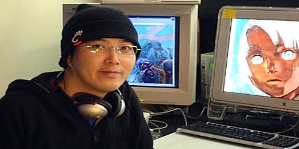
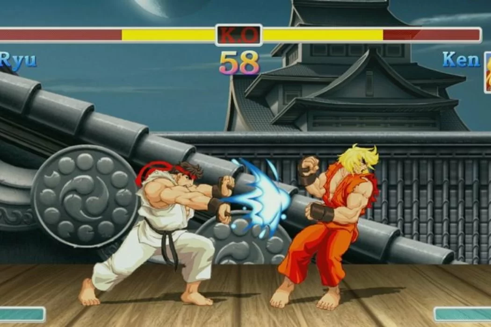

Street Fighter è un videogioco arcade del 1987 sviluppato da Capcom, che segna l'inizio della celebre serie di picchiaduro a incontri. Nonostante non abbia raggiunto la stessa popolarità del suo seguito, Street Fighter II: The World Warrior, è comunque considerato un titolo influente nel genere dei picchiaduro.
Il gioco è ispirato al manga Karate baka ichidai e ha come protagonista Ryu, che affronta dieci lottatori controllati dalla CPU in varie località del mondo. Il gameplay richiede al giocatore di vincere due round su tre contro ciascun avversario per avanzare.
Un aspetto rivoluzionario di Street Fighter sono i suoi cabinati arcade, che offrono due tipi di configurazione dei pulsanti: uno standard con tre pulsanti per i pugni e tre per i calci, e un altro con tecnologia pneumatica che riconosce l'intensità dell'attacco basata sulla pressione esercitata sul tasto.
Nonostante il successo moderato iniziale, Street Fighter ha posto le basi per la rinomata serie di videogiochi che avrebbe seguito, diventando un punto di riferimento nel mondo dei picchiaduro.

Si è unito all' azienda Capcom nel 1984, contribuendo a svariate serie videoludiche come Final Fight e Street Fighter . Ha anche contributo nel mondo dell'animazione giapponese: lavorando per Sunrise a Turn A Gundam, Overman King Gainer e Code Geass: Lelouch of the Rebellion. Ha lasciato Capcom nel 2003 per lavorare come artista freelance.
È apparso in un cameo nel film di Takashi Shimizu Tomie: Re-birth.